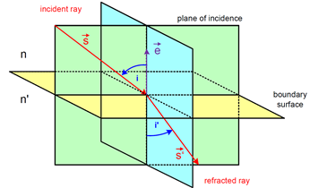
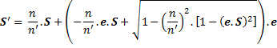
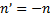
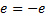
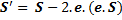

Calculation of Refraction or Reflection
In the toolbox functions which use the general equation for Snell’s law in three dimensions to compute the new refracted and reflected direction.

The three dimensional version of Snell’s law states that the direction of the refracted ray is given by the following relation.

And special case of reflection occurs when  and  and the relation reduces to

The condition of total internal reflection is determined simply by checking the new ray direction for being complex number.
Created with the Personal Edition of HelpNDoc: Easily create EPub books